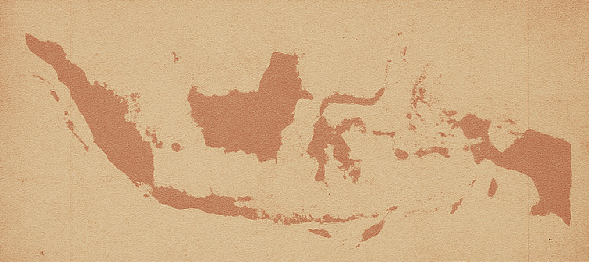
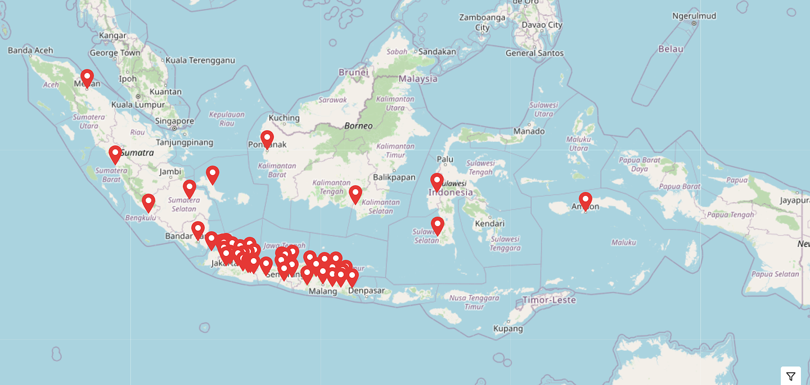

Peta Petrus
Mengabadikan Jejak Kekerasan: Pembunuhan Misterius di Indonesia 1982–1985

Discussion on Human Rights Archive
In conjunction with the 8th Human Rights Conference
Fakultas Hukum Universitas Airlangga
Selasa, 12 Agustus 2025 • 10.30–12.00
Penghargaan & Ucapan Terima Kasih
`
Sumber Data & Materi
Seluruh data, kesaksian, peta, dan dokumentasi diadaptasi dari
www.petapetrus.com,
sebuah inisiatif kolektif untuk mendokumentasikan peristiwa
Penembakan Misterius (Petrus) 1983–1985.
Tim Peta Petrus
- Rian AdhiVira Prabowo
- Dimas Nugroho
- Paduka Yang Mulia Kanjeng Ratu Syahrin Shafa Akhsania
- Bimo
Kontributor
- Semoga Barokah Werk / Pupung
- Astri Dian Purnamasari
- Unu Putra Herlambang
- Moh. Haykal Shokat Ali
Kontributor Arsip
Penyusun & Desainer Adaptasi
Astri Dian Purnamasari — Penyusunan konten, desain tata letak, dan adaptasi visual untuk format buku dan flipbook interaktif.
Pernyataan Etis
Buku ini disusun untuk tujuan edukasi, pelestarian sejarah, dan diskusi publik mengenai pelanggaran HAM berat. Tidak ada keuntungan komersial yang diambil dari penerbitan ini. Seluruh hak cipta materi asli tetap pada kontributor masing-masing.
Jejak Darah yang Tidak Boleh Terhapus
Tahun 1983–1985, Indonesia memasuki masa kelam yang hingga kini meninggalkan luka sejarah.
Rangkaian peristiwa yang dikenal sebagai Penembakan Misterius (Petrus) menewaskan ribuan orang yang dicap “penjahat”, “gali”, atau mantan narapidana — banyak di antaranya tanpa proses hukum.
Mayat-mayat korban dibiarkan tergeletak di pinggir jalan, sungai, dan tempat-tempat umum sebagai “shock therapy” untuk menakut-nakuti masyarakat.
Flipbook ini merekam bukti, kesaksian, dan jejak peristiwa tersebut — sebagai pengingat, pelajaran, dan peringatan, agar kejahatan kemanusiaan serupa tidak pernah terulang dan tidak pernah dibungkus menjadi narasi kehormatan.
i
Ringkasan Historis
Petrus adalah singkatan dari Penembakan Misterius, operasi negara pada awal 1980-an yang dijalankan oleh aparat militer dan kepolisian. Program ini dimulai di Yogyakarta dan kemudian meluas ke berbagai kota besar, dengan koordinasi dari struktur komando resmi.
Presiden Soeharto mengakui keberadaan operasi ini dalam otobiografinya, menyebutnya sebagai bagian dari pemberantasan kejahatan. Namun, pada 2011 Komnas HAM menyatakan Petrus sebagai pelanggaran HAM berat karena bersifat terencana, meluas, sistematis, dan dilakukan oleh aparat negara.
Estimasi jumlah korban bervariasi dari ratusan hingga ribuan. Selama puluhan tahun, tak ada pelaku yang diadili, menjadikan Petrus simbol impunitas di Indonesia.
Baru pada Januari 2023, Presiden Joko Widodo mengakui secara resmi bahwa Petrus termasuk dalam 12 pelanggaran HAM berat, menyampaikan penyesalan, dan berkomitmen memulihkan hak-hak korban secara adil.
ii
Potret Singkat Petrus
| Apa |
Penembakan Misterius (Petrus) — operasi penembakan di luar hukum oleh negara. |
| Siapa |
Aparat militer dan kepolisian di bawah koordinasi komando resmi. |
| Kapan |
Periode intens 1983–1985; diklasifikasikan pelanggaran HAM berat oleh Komnas HAM (2011); diakui Presiden Joko Widodo (2023). |
| Di mana |
Dimulai di Yogyakarta, lalu meluas ke berbagai kota besar di Indonesia. |
| Mengapa |
Disebut sebagai “pemberantasan kejahatan” melalui shock therapy (teror lewat penampakan jenazah di ruang publik). |
| Bagaimana |
Korban ditembak tanpa proses hukum; jenazah dibiarkan di jalan, sungai, pasar, dan tempat umum untuk menimbulkan rasa takut. |
Surat Bati Mulyono
Surat ini ditulis oleh Bati Mulyono, seorang korban yang selamat, dan ditujukan kepada Presiden Republik Indonesia saat itu (2023), Joko Widodo.
Di dalamnya terkandung kesaksian langsung, bukti pengakuan Soeharto dari otobiografinya, pernyataan pejabat negara, serta temuan Komnas HAM yang menyatakan Petrus sebagai kejahatan terhadap kemanusiaan yang sistematis dan meluas.
Bati Mulyono menuntut dua hal:
1. Pengakuan resmi negara bahwa Soeharto dan Orde Baru bertanggung jawab atas Petrus.
2. Pemulihan hak-hak korban beserta keluarganya.
Ia menegaskan bahwa rekonsiliasi tanpa penetapan pelaku hanyalah menambah luka dan merusak kebenaran sejarah.
iv
Peta Lokasi Peristiwa Petrus

| Daerah |
Jumlah Peristiwa |
| Sumatera |
11 |
| Kalimantan |
5 |
| Jawa Barat |
83 |
| Jawa Tengah |
23 |
| Jawa Timur |
11 |
| Total |
133 |
Daftar Peristiwa
Sumatera
Peristiwa: 11
1. Medan, 27 Juli 1982
2. Padang, 1 Juli 1983
3. Sumatera Barat
4. Raja Lebong, 22 Juli 1983
5. Raja Lebong
6. Palembang, 27 Juni 1983
7. Palembang, 9 Juli 1983
8. Pangkalpinang, 15 Juli 1983
9. Bandar Lampung
10. Bandar Lampung, 23 Juni 1983
11. Lampung Selatan, 20 Juni 1983
Kalimantan
Peristiwa: 5
1. Pontianak, 20 Juni 1983
2. Pontianak 29 Juli 1983
3. Pontianak, Juli 1983
4. Pontianak Juli 1983
5. Banjarmasin, 1 Juli 1983
ii
Jawa Barat
Peristiwa: 83
1. Cilegon
2. Tangerang, 2 Juli 1983
3. Jakarta Barat, 4 Juli 1983
4. Jakarta Barat, 5 Juli 1983
5. Jakarta Barat, 5 Juli 1983
6. Jakarta Pusat
7. Jakarta Pusat, 26 Juli 1983
8. Jakarta Pusat, 2 Juli 1983
9. Jakarta Pusat
10. Jakarta Selatan, 26 Juli 1983
11. Jakarta Selatan 26 Juli 1983
12. Opini Jakarta Selatan 11.10
13. Jakarta Utara, 7 Juli 1983
14. Jakarta Utara, 9 Juli 1983
15. Jakarta utara, 14 Juli 1983
16. Jakarta Utara, 2 Juli 1983
17. Jakarta Timur, 9 Juli 1983
18. Jakarta Timur, 9 Juli 1983
iii
19. Jakarta Timur, 6 Mei 1983
20. Jakarta Timur, n/d
21. Jakarta Timur, 26-27 Mei 1983
22. Jakarta, 9 Juli 1983
23. Jakarta, 10 Juli 1983
24. Jakarta, 15 Juli 1983
25. Jakarta, 15 Juli 1983
26. Jakarta, 23 Juli 1983
27. Jakarta, 28 Juni 1983
28. Opini Jakarta
29. Opini Buyung Jakarta, 5 Juli 1983
30. Umum Jakarta, 5 Juli 1983
31. Jakarta
32. Jakarta, 25 Januari 1983
33. Bekasi, 1 Juli 1983
34. Bekasi, 7 Juli 1983
35. Bekasi, 23 Juli 1983
36. Bogor, 9 Juli 1983
37. Bogor 27.2
38. Bogor, 29 Mei 1983
iv
39. Bogor, 2 Juli 1983
40. Bogor, 17 Juli
41. Bogor, 25 Juli 1983
42. Bogor
42. Sukabumi
47. Cianjur, 14 Juli 1983
48. Cianjur, 28 Juli 1983
49. Cianjur
43. Karawang, 20 Juni 1983
44. Karawang, 23 Juni 1983
45. Karawang, 14 Juli 1983
46. Karawang
51. Cikampek
54. Bandung
55. Bandung, 2 Juli 1983
56. Bandung, 6 Juli 1983
57. Bandung, 11 Juni 1983
58. Bandung, 16 Juni 1983
59. Bandung, 17 Juni 1983
60. Bandung, 26 Juli 1983
v
61. Bandung
62. Bandung, 21 Juni
63. Opini Bandung, 14 juni 1983
64. Bandung, 25 Juni 1983
65. Subang
66. Sumedang, 7 Juli 1983
67. Garut, 9 Juni 1983
68. Garut, 14 juni 1983
69. Garut 16 Juli 1983
69. Garut 22 Juli 1983
70. Garut
71. Majalengka, Juli 1983
72. Tasikmalaya, 16 Juli 1983
73. Tasikmalaya, 19 Juli 1983
74. Tasikmalaya
75. Ciamis, 16 Juli 1983
76. Ciamis, 19 Juli 1983
77. Ciamis, 27 Juni 1983
78. Ciamis
79. Cirebon, 23 Juni 1983
vi
79. Cirebon, 26 Juni 1983
80. Cirebon, 5 Juli 1983
81. Cirebon
82. Banjar, 16 Juli 1983
83. Banjar, 19 Juli 1983
Jawa Tengah
Peristiwa: 23
1. Banyumas, 29 Juli 1983
2. Kendal, 22 Juli 1983
3. Temanggung, 22 Juli 1983
4. Yogyakarta, 13 April 1983
5. Yogyakarta, 20 Juli 1983
6. Yogyakarta, 28 Juli 1983
7. Yogyakarta, 10 April 1983
8. Yogyakarta
9. Yogyakarya
10. Yogyakarta, 5 April 1983
11. Yogyakarta, 23 Oktober 1983
12. Yogyakarta, 15 April 1983
13. Yogyakarta, 12 April 1983
vii
14. Semarang, 23 Juni 1983
15. Semarang, 26 Juli 1983
16. Semarang, 28 Juli 1983
17. Semarang, 21 Juni 1983
18. Semarang, 20 Juli 1983
19. Semarang, 2 Juli 1983
20. Semarang, 7 Juli 1983
21. Kudus, 26 Jul 1983
22. Solo, 3 Agustus 1983
23. Solo
Jawa Timur
Peristiwa: 11
1. Trenggalek, Juli 1983
2. Jombang, Juli 1983
3. Malang, Juli 1983
4. Pemekasan, 30 Juni 1983
5. Probolinggo, Juli 1983
6. Lumajang, 2 Juli 1983
7. Lumajang, 16 Juli 1983
8. Jember, 5 Juli 1983
viii
Catatan:
1. Beberapa berita memuat kekerasan vulgar yang mungkin
menimbulkan ketidaknyamanan.
2. Marker mungkin tidak akurat & data tidak sepenuhnya mencerminkan
jumlah korban sebenarnya.
3. Seluruh pengerjaan dilakukan secara kolektif dan swadaya
tanpa donor/funding.
4. Laman ini untuk kepentingan kemanusiaan dan pendidikan,
bukan komersil.
ix
Penembak-Penembak Misterius Terjadi
Ditandai Berbagai Ciri
Medan, 27 Juli 1982
1
Daftar Peristiwa
Polisi Padang Jaring
68 Laki-Laki Bertato
Padang, 1 Juli 1983
2
Daftar Peristiwa
385 Koli Barang Selundupan
Ditangkap di Sumbar
Sumatera Barat
3
Daftar Peristiwa
132 Kg Ganja dengan 4 Orang
Penanam & Pengedarnya Ditangkap di Bengkulu
Raja Lebong, 22 Juli 1983
4
Daftar Peristiwa
132 Ganja Disita
Pelaku Ditangkap
Raja Lebong
5
Daftar Peristiwa
Sesosok Mayat Laki
Ditemukan di Pakjo Palembang
Palembang, 27 Juni 1983
6
Daftar Peristiwa
2 Korban Penembak Gelap di
Palembang Ditemukan
Palembang, 9 Juli 1983
7
Daftar Peristiwa
Puluhan Cukong dan Pengedar Kupon
Jadi Buntut Dijaring di Pangkalpinang
Pangkalpinang, 15 Juli 1983
8
Daftar Peristiwa
Korban Ke 21 Penembak Misterius
Di Lampung Ditemukan
Bandar Lampung
9
Daftar Peristiwa
Lagi 4 Mayat
Di Karawang
Bandar Lampung, 23 Juni 1983
10
Daftar Peristiwa
Mayat Residivis Ditemukan
Lampung Selatan, 20 Juni 1983
11
Daftar Peristiwa
Penembak Gelap di Pontianak
Pontianak, 25 Juni 1983
12
Daftar Peristiwa
Penembak Misterius
Tewaskan 8 Korban
Pontianak 29 Juli 1983
13
Daftar Peristiwa
Korban Ke Tiga Penembak
Misterius di Pontianak
Pontianak, Juli 1983
14
Daftar Peristiwa
Selebaran Gelap
Sambut Penembak Gelap
Pontianak, Juli 1983
15
Daftar Peristiwa
Wilayah Kodak XIII
Masih Rawan
Banjarmasin, 1 Juli 1983
16
Daftar Peristiwa
Uang Palsu Lima Ribuan Beredar di Ambon
Penjual Koran Jadi Korban Pertama Penipuan
Ambon, 5 Juli 1983
17
Daftar Peristiwa
Korban
Cilegon
18
Daftar Peristiwa
Ayah Korban "Misterius" Melapor
Tangerang, 2 Juli 1983
19
Daftar Peristiwa
Lagi Korban Penembak Misterius
Ditemukan Di Pekuburan Cina Jelambar
Jakarta Barat, 4 Juli 1983
20
Daftar Peristiwa
Mayat Laki-Laki Bertato Wanita Telanjang
Ketemu Diatas Kuburan
Jakarta Barat, 5 Juli 1983
21
Daftar Peristiwa
Lagi, Dua Korban
Penembakan Gelap
Jakarta Barat, 5 Juli 1983
22
Daftar Peristiwa
Si Manusia Tato Tewas
Dikeroyok 7 Laki-Laki
Jakarta Pusat
23
Daftar Peristiwa
543 Orang Residivis
Jadi Korban Tembak Gelap
Jakarta Pusat, 26 Juli 1983
24
Daftar Peristiwa
Dua Korban Penembak Gelap
Jakarta Pusat, 2 Juli 1983
25
Daftar Peristiwa
Lelaki Bertato Tewas Dikeroyok
Jakarta Pusat
26
Daftar Peristiwa
543 Orang Residivis
Jadi Korban Tembak Gelap
Jakarta Selatan, 26 Juli 1983
27
Daftar Peristiwa
543 Orang Residivis
Jadi Korban Tembak Gelap
Jakarta Selatan 26 Juli 1983
28
Daftar Peristiwa
Galakkan Hukuman Mati
Opini Jakarta Selatan
29
Daftar Peristiwa
Ny. Jenny Diperas 5 Orang Yang
Mengaku Penembak Misterius
Jakarta Utara, 7 Juli 1983
30
Daftar Peristiwa
Korban Penembakan Gelap
Ditemukan Di Pasar Rebo
Jakarta Utara, 9 Juli 1983
31
Daftar Peristiwa
3 Laki-Laki Tewas Ditembak
"Pembunuh Misterius" Pada Hari Raya Lebaran
Jakarta utara, 14 Juli 1983
32
Daftar Peristiwa
Dua Korban Penembak Gelap
Jakarta Utara, 2 Juli 1983
33
Daftar Peristiwa
Mayat Bertato Ditemukan
Jakarta Timur, 9 Juli 1983
34
Daftar Peristiwa
Korban Penembakan Gelap
Ditemukan Di Pasar Rebo
Jakarta Timur, 9 Juli 1983
35
Daftar Peristiwa
Lagi, Residivis Ditembak
Jakarta Timur, 6 Mei 1983
36
Daftar Peristiwa
Galakkan Hukuman Mati
Jakarta Timur, n/d
37
Daftar Peristiwa
Galakkan Hukuman Mati
Jakarta Timur, 26-27 Mei 1983
38
Daftar Peristiwa
Tercatat 150 Kasus Kejahatan
dengan Pelaku Wanita
Jakarta, 9 Juli 1983
39
Daftar Peristiwa
Apakah Agus & Eddy Menpor
Masih Hidup?
Jakarta, 10 Juli 1983
40
Daftar Peristiwa
Pemuda Bertato Seharusnya
Selalu Berbudi Luhur
Jakarta, 15 Juli 1983
41
Daftar Peristiwa
Situati Keamanan Ibukota Mantap
Didaerah-daerah Rawan Tertib
Jakarta, 15 Juli 1983
42
Daftar Peristiwa
Kasus Perampasan Mobil
Segera Terbongkar
Jakarta, 23 Juli 1983
43
Daftar Peristiwa
Pemuda Bertatto Mencurigakan
Akhirnya Tewas Dikeroyok
Jakarta, 28 Juni 1983
44
Daftar Peristiwa
Galakkan Hukuman Mati
Opini Jakarta
45
Daftar Peristiwa
Gepeng Tidak Wajib Ditahan
Opini Buyung Jakarta, 5 Juli 1983
46
Daftar Peristiwa
Sudardji Tolong
Korban-Korban Penembak Misterius
Umum Jakarta, 5 Juli 1983
47
Daftar Peristiwa
Peta Kejahatan Bergeser
Ke Pinggir Kota
Jakarta (RB)
48
Daftar Peristiwa
151 Orang Ditangkap
dalam Operasi Celurit
Jakarta, 25 Januari 1983 (RB)
49
Daftar Peristiwa
Gara-Gara Ambulance Mogok
Mayat Bertatto Diseret Selama 3 Jam
Bekasi, 1 Juli 1983
50
Daftar Peristiwa
Laki-Laki Bertato Wanita Telanjang
Tergeletak Ditembus Peluru
Bekasi, 7 Juli 1983
51
Daftar Peristiwa
6 Laki-Laki Tak Dikenal
Mati Di Dor
Bekasi, 23 Juli 1983
52
Daftar Peristiwa
Korban Penembakan Gelap
Ditemukan Di Pasar Rebo
Bogor, 9 Juli 1983
53
Daftar Peristiwa
Peristiwa Kejahatan Menurun 50%
Sejak Penembak Gelap Beraksi
Bogor
54
Daftar Peristiwa
JS Ditangkap Terlibat
Penembakan Letkol Adam
Bogor, 29 Mei 1983
55
Daftar Peristiwa
Dua Mayat Tak Dikenal
di Kampung Cigeluk
Bogor, 2 Juli 1983
56
Daftar Peristiwa
Laki-Laki Ditembak 7 Peluru
Mengadu ke LBH
Bogor, 17 Juli
57
Daftar Peristiwa
SP Pemilik Senjata Api Gelap
Menyerahkan Diri Pada Yang Berwajib
Bogor, 25 Juli 1983
58
Daftar Peristiwa
Korban
Sukabumi
60
Daftar Peristiwa
3 Laki-Laki Tewas Ditembak
"Pembunuh Misterius" Pada Hari Raya Lebaran
Cianjur, 14 Juli 1983
61
Daftar Peristiwa
Dua Mayat Korban Pembunuhan
Ditemukan di Cianjur
Cianjur, 28 Juli 1983
62
Daftar Peristiwa
Korban
Cianjur
63
Daftar Peristiwa
Lagi, 2 Mayat Ditemukan
Terapung di Karawang
Karawang, 20 Juni 1983
64
Daftar Peristiwa
Lagi, 4 Mayat
di Karawang
Karawang, 23 Juni 1983
65
Daftar Peristiwa
3 Laki-Laki Tewas Ditembak
"Pembunuh Misterius" Pada Hari Raya Lebaran
Karawang, 14 Juli 1983
66
Daftar Peristiwa
Korban
Karawang
67
Daftar Peristiwa
Korban
Cikampek
68
Daftar Peristiwa
Korban
Bandung
69
Daftar Peristiwa
Laki-Laki Bertato Wanita Telanjang
Tergeletak Ditembus Peluru
Bandung, 2 Juli 1983
70
Daftar Peristiwa
Gali Kota Bandung
Ditemukan Tewas
Bandung, 6 Juli 1983
71
Daftar Peristiwa
Ijin Menghilangkan Tato
Bandung, 11 Juni 1983
72
Daftar Peristiwa
Puluhan Pemuda Bertato di Bandung Timur
Lenyap dari Pusat Keramaian
Bandung, 16 Juni 1983
73
Daftar Peristiwa
Orang Residivis Bertato
Digulung Operasi Celurit
Bandung, 17 Juni 1983
74
Daftar Peristiwa
543 Orang Residivis
Jadi Korban Tembak Gelap
Bandung, 26 Juli 1983
75
Daftar Peristiwa
Ramai-ramai Hilangkan Tato
Dengan Berbagai Cara
Bandung
76
Daftar Peristiwa
Korban Penembakan Misterius di
Jawa Barat Mencapai 127 Orang
Bandung, 21 Juni
77
Daftar Peristiwa
Sejak "Jeger" Ditembak Pembunuh
"Misterius" Pengusaha Tekstil Aman
Opini Bandung, 14 juni 1983
78
Daftar Peristiwa
Dua Penjahat Tewas Tertembak
Bandung, 25 Juni 1983
79
Daftar Peristiwa
Korban
Subang
80
Daftar Peristiwa
Laki-Laki Bertato Wanita Telanjang
Tergeletak Ditembus Peluru
Sumedang, 7 Juli 1983
81
Daftar Peristiwa
Mayat Bertato Ditemukan di Kota Garut
Garut, 9 Juni 1983
82
Daftar Peristiwa
Ada Isyu Pembunuh Bayaran
Berkeliaran Cari Sasaran
Garut, 14 juni 1983
83
Daftar Peristiwa
3 Mayat Korban Misterius
Ditemukan di Priangan Timur
Garut 16 Juli 1983
84
Daftar Peristiwa
27 Ditangkap Di Garut
Karena Menanam Ganja
Garut, 22 Juli
85
Daftar Peristiwa
Korban Penembakan Misterius di
Jawa Barat Mencapai 127 Orang
Garut
86
Daftar Peristiwa
"Si Ronda" Jeger Palimanan
Tewas Ditembus Tiga Peluru
Majalengka, Juli 1983
87
Daftar Peristiwa
3 Mayat Korban Misterius
Ditemukan di Priangan Timur
Tasikmalaya, 16 Juli 1983
88
Daftar Peristiwa
Lagi, Tiga Mayat Ditemukan di Priangan Timur
Tasikmalaya, 19 Juli 1983
89
Daftar Peristiwa
Korban
Tasikmalaya
90
Daftar Peristiwa
3 Mayat Korban Misterius
Ditemukan di Priangan Timur
Ciamis, 16 Juli 1983
91
Daftar Peristiwa
Lagi, Tiga Mayat Ditemukan
di Priangan Timur
Ciamis, 19 Juli 1983
92
Daftar Peristiwa
Dua Mayat Terbungkus Karung Ditemukan
di Ciamis & Dua Residivis Hilang di Tasik
Ciamis, 27 Juni 1983
93
Daftar Peristiwa
Korban
Ciamis
94
Daftar Peristiwa
Residivis Bertato Dibekuk
Petugas Operasi Celurit
Cirebon, 23 Juni 1983
95
Daftar Peristiwa
Residivis Bertato Dibekuk
Petugas Operasi Celurit
Cirebon, 26 Juni 1983
96
Daftar Peristiwa
Lagi, Dua Korban Penembakan Gelap
Cirebon, 5 Juli 1983
97
Daftar Peristiwa
Korban
Cirebon
98
Daftar Peristiwa
3 Mayat Korban Misterius
Ditemukan di Priangan Timur
Banjar, 16 Juli 1983
99
Daftar Peristiwa
Lagi, 3 Mayat Ditemukan
di Priangan Timur
Banjar, 19 Juli 1983
100
Daftar Peristiwa
Lima Mayat Bertato
Ditemukan di Banyumas
Banyumas, 29 Juli 1983
101
Daftar Peristiwa
Delapan Mayat Tak Dikenal
Ditemukan di Temanggung dan Kendal
Kendal, 22 Juli 1983
102
Daftar Peristiwa
Delapan Mayat Tak Dikenal
Ditemukan di Temanggung dan Kendal
Temanggung, 22 Juli 1983
103
Daftar Peristiwa
Tiga Orang Bekas "Gali"
Kembali ke Yogyakarta
Yogyakarta, 13 April 1983
104
Daftar Peristiwa
"Gali Kebal Tewas Telanjang"
Yogyakarta, 20 Juli 1983
105
Daftar Peristiwa
Laksusda Jateng Bantah
Lakukan Penembakan Gelap
Yogyakarta, 28 Juli 1983
106
Daftar Peristiwa
Sembilan Penjahat Tewas
Dan 12 Lagi Luka Berat Tertembak
Yogyakarta, 10 April 1983
107
Daftar Peristiwa
Dua Janda Gali Minta Perlindungan
Yogyakarta
108
Daftar Peristiwa
Masyarakat Jangan Menghina
Istri "Gali" yang Kini Menjanda
Yogyakarya
109
Daftar Peristiwa
Lima Anggota "Gali"
Tewas Tertembak di Yogya
Yogyakarta, 5 April 1983
110
Daftar Peristiwa
Operasi Patuh I
Bukan untuk Cari Dana
Yogyakarta, 23 Oktober 1983
111
Daftar Peristiwa
Gebrakan di Yogyakarta
akan Dilanjutkan Terus
Yogyakarta, 15 April 1983
112
Daftar Peristiwa
LBH Yogyakarta Mengharap
Para "Gali" yang Menyerah Diperiksa Secara Wajar
Yogyakarta, 12 April 1983
113
Daftar Peristiwa
Kejahatan di Semarang
dan Solo Menurun Drastis
Semarang, 23 Juni 1983
114
Daftar Peristiwa
543 Orang Residivis
Jadi Korban Tembak Gelap
Semarang, 26 Juli 1983
115
Daftar Peristiwa
Laksusda Jateng Bantah
Lakukan Penembakan Gelap
Semarang, 28 Juli 1983
116
Daftar Peristiwa
Di Semarang, Gali Mati Ditembak,
Di Yogya Dikeroyok Massa
Semarang, 21 Juni 1983
117
Daftar Peristiwa
Laksusda Jateng
Hubungi Hiswana Migas
Semarang, 20 Juli 1983
118
Daftar Peristiwa
60 Persen Penghuni LP Bulu
Terlibat Kasus Pembunuhan
Semarang, 2 Juli 1983
119
Daftar Peristiwa
Boss "Residivis" Bajingan Lompat
Mati Tertembak
Semarang, 7 Juli 1983
120
Daftar Peristiwa
543 Orang Residivis
Jadi Korban Tembak Gelap
Kudus, 26 Jul 1983
121
Daftar Peristiwa
Dua Lagi Jenazah Penuh
Dengan Rajah Ditemukan di Solo
Solo, 3 Agustus 1983
122
Daftar Peristiwa
Sejumlah Residivis Solo
Ditemukan Mati Akibat Tembakan
Solo
123
Daftar Peristiwa
12 Mayat Tidak Dikenal Ditemukan
Di Beberapa Pelosok
Trenggalek, Juli 1983
124
Daftar Peristiwa
12 Mayat Tidak Dikenal Ditemukan
Di Beberapa Pelosok
Jombang, Juli 1983
125
Daftar Peristiwa
12 Mayat Tidak Dikenal Ditemukan
Di Beberapa Pelosok
Malang, Juli 1983
126
Daftar Peristiwa
12 Mayat Tidak Dikenal Ditemukan
Di Beberapa Pelosok
Pemekasan, 30 Juni 1983
127
Daftar Peristiwa
12 Mayat Tidak Dikenal Ditemukan
Di Beberapa Pelosok
Probolinggo, Juli 1983
128
Daftar Peristiwa
12 Mayat Tidak Dikenal Ditemukan
Di Beberapa Pelosok
Lumajang, 2 Juli 1983
129
Daftar Peristiwa
12 Mayat Tidak Dikenal Ditemukan
Di Beberapa Pelosok
Lumajang, 16 Juli 1983
130
Daftar Peristiwa
12 Mayat Tidak Dikenal Ditemukan
Di Beberapa Pelosok
Jember, 5 Juli 1983
131
Daftar Peristiwa
12 Mayat Tidak Dikenal Ditemukan
Di Beberapa Pelosok
Bondowoso, Juli 1983
132
Daftar Peristiwa
12 Mayat Tidak Dikenal Ditemukan
Di Beberapa Pelosok
Situbondo, 5 Juli 1983
133
Daftar Peristiwa
12 Mayat Tidak Dikenal Ditemukan
Di Beberapa Pelosok
Banyuwangi, 13 Juli 1983
134
Daftar Peristiwa